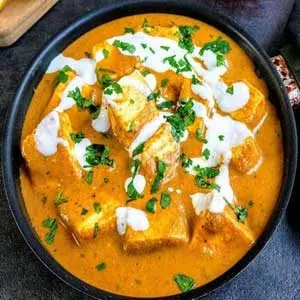
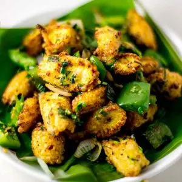
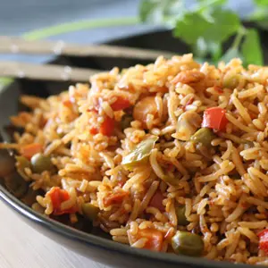
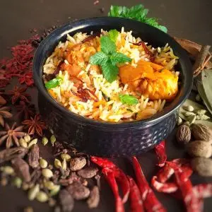
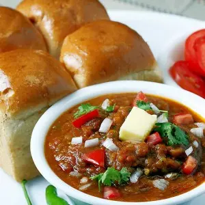
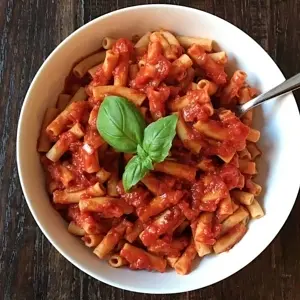
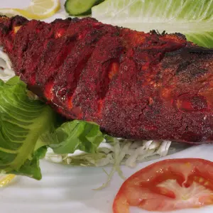

Recipes

Paneer Butter Masala
Medium spice curry to be served with hot and soft butter rottis
Paneer Butter Masala Ingrediants
- 1½ tablespoon Butter
- 1½ teaspoon ginger garlic paste or fine chopped (or ½ to ¾ inch ginger, 2 to 3 medium garlic cloves)
- ¼ teaspoon red chilli powder (optional, for color)
- 200 to 250 grams PANEER (2 heaped cups)
- ½ to ¾ teaspoon kasuri methi (or dried fenugreek leaves)
- 3 tablespoon cream (or 6 to 8 cashews more)
- 2 tablespoon coriander leaves (or cilantro finely chopped) (for garnish)

Baby Corn Fry
A perfect healthy dish that's good to have with rice or phulka
Baby Corn Fry Ingrediants
- 1 tbsp oil
- 1/2 tsp cumin (or jeera)
- 1 tsp ginger grated (or ginger garlic paste)
- 3/4 cup onions thinly sliced
- 100 grams baby corn or 1 heaped cup
- 1/2 cup bell peppers or carrots, cubed
- Salt as needed
- 1 pinch turmeric
- 1 sprig curry leaves or coriander leaves or methi or palak chopped finely
- 1/2 tsp pepper corn or garam masala powder
- 1/4 tsp saunf / fennel seeds (optional)
Butter Chicken
Creamy tomato based gravy mixed with tossed chicken is a blend of sweet and spice. Can be served with an authentic tandoori roti.
Butter Chicken Ingrediants
First marination
- 1/2 kg CHICKEN (or 1 lb.) (bone-in or boneless)
- 3/4 tablespoon lemon juice
- 1/4 teaspoon Salt
- 1/2 teaspoon Red chili powder or paprika
Second Marination
- 3/4 teaspoon kasuri methi crushed or powdered dried fenugreek leaves
- 1/8 teaspoon turmeric or haldi
- 1/2 to 3/4 teaspoon garam masala powder
- 3/4 tablespoon oil
- 1 tablespoon Ginger Garlic Paste
- 1/2 cup thick curd or hung yogurt (or greek yogurt, refer notes)
For Gravy
- 2 tablespoon butter
- 1 teaspoon GINGER GARLIC PASTE
- 1 cinnamon 2 inch (or dalchini)
- 2 green cardamoms (or elaichi)
- 2 cloves (or laung)
- 1 to 2 green chilies slit
- 4 large tomatoes (pureed in the blender and filtered to remove skin and seeds) or tinned puree as needed
- 1 teaspoon red chili powder or paprika (adjust to suit your taste and color)
- 14 cashew nuts or blanched soaked almonds (refer notes)
- 1/2 to 3/4 teaspoon garam masala powder
- 1/2 tablespoon kasuri methi crushed or powdered dried fenugreek leaves
- 1/4 tablespoon sugar
- salt as needed
- 80 to 100 ml chilled cream (refer the notes)
- 2 tbsp Coriander leaves for garnishing

Schewan Fried Rice
A spicy fried rice which is an Indo-Chinese dish that can be prepared in less time and tastes too good
Schewan Fried Rice Ingrediants
- 11/2 cups rice uncooked (any premium quality)
- 1/4 cup spring onions or onions
- 3/4 cup carrots chopped (optional)
- 3/4 cup french beans chopped (optional)
- 3/4 cup capsicum chopped or bell peppers
- 1/2 cup green peas
- 2 tbsp oil
- 1/2 tbsp sugar
- salt as needed

Hyderabadi Chicken Biriyani
This is the authentic flavour of the Hyderabadi biriyani which is famous worlwide and easy to prepare
Hyderabadi Chicken Biriyani Ingrediants
- 1 1/2 cups basmati rice (aged )
- 1/2 kg CHICKEN (preferably thighs & drumsticks)
- % to 1/2 tsp biryani masala powder or garam masala for sprinkling
- 1 large onions or 1/3 cup fried onions store bought
- 4 tbsps coriander leaves (or cilantro ,finely chopped, 2 tbsps + 2 tbsps divided)
- 4 tbsps mint leaves (or pudina, finely chopped, 2 tbsps + 2 tbsps divided)
- 4 tbsp Oil (or ghee)
- 2 tbsps ghee (or clarified butter)
- 1/4 tsp saffron strands (or kesar, soaked in 3 tbsps. hot milk)
For Marination
- 1 1/4 tbsp GINGER GARLIC PASTE
- 1/4 tsp turmeric
- 1 to 2 green chilies slit
- 2/3 cup yogurt or fresh curd (or 165 ml or 1/2 cup + 3 tbsp)
- 2 tbsps Lemon juice
- 1 to 1 1/2 tsp red chili powder or paprika
- 1 to 1 1/2 tsp biryani masala powder or garam masala
- I/4 to 1/2 tsp green cardamom powder (or elaichi powder)
- 3/4 tsp Salt (I used 1 tsp pink salt)
For Rice
- 7 cups water
- 1 to 1 1/4 tsp salt (I used 1 1/2 tsp pink salt)
- 1 tsp oil
- 3 inch cinnamon piece (or dalchini)
- 6 cloves (or laung)
- 4 green cardamom (elaichi)
- 1 bay leaf (or tej patta)
- 1 star anise ( biryani flower)
- 2 strands mace (or javitri) (optional)
- 1 black cardamom (optional)
- 1/2 tsp caraway seeds (or shahi jeera) (optional)

Oatmeal Pancake
Tasty and flyffy pancake to be served all time which is very delicious
Oatmeal Pancake Ingrediants
- 11/2 cups oats flour
- 1/4 tsp salt or as needed
- 11/2 tsp baking powder
- 1/8 tsp cinnamon (ceylon cinnamon) (optional)
- 1 cup cornflour
- 1 cup milk (any milk)
- 11/2 tbsp butter soft or oil
- 1 tsp vanilla extract
- 1 tbsp sugar
For Serving
- Chocolate syrup or maple syrup

Pav Bhaji
A thick vegetable curry served hot with a soft bread roll
Pav Bhaji Ingrediants
For Bhaji
- 1 cup potatoes diced or 3 medium or 2 large
- 1/2 to 3/4 cup green peas or matar
- 1/2 to 1 cup cauliflower or gobi florets
- 1/2 cup capsicum (bell pepper) chopped
- 2 tablespoon butter ( or oil)
- 2 medium onions (3/4 cup finely chopped )
- 1 green chili (optional)
- 1 teaspoon GINGER GARLIC PASTE or chopped
- 1/2 to 3/4 teaspoon red chili powder less spicy kind or red chili paste as needed
- 14 teaspoon turmeric or haldi
- 1 tablespoon PAVBHAJI MASALA POWDER (use more if needed)
- 1 large tomato or 2 medium chopped
- 3/4 teaspoon kasuri methi (dried fenugreek leaves, optional)
- 1/2 teaspoon salt
For Toasting pav
- 4 to 6 Pay (buns) (dinner rolls)
- 1 tablespoon butter for toasting pav
- 1/2 teaspoon pay bhaji masala powder

Red Sauce Pasta
A simple quick pasta to fill the evening
Red Sauce Pasta Ingrediants
- 1 1/2 cups pasta (any)
- 2 to 3 tbsp olive oil (or any)
- salt as needed
- 3 to 4 garlic cloves
- 2 tbsp onions finely chopped
- 1 1/2 cups tomatoes ripe red chopped
- 1 1/4 cup red bell peppers or red capsicum or 1/2 to 3/4 cup onions
- 1/2 to 1 tsp red chili flakes (adjust as needed)
- 1/2 to 1 tsp oregano or mixed herbs
- pepper freshly crushed for garnish

Fish Fry
A perfect snack to have in the cool weather
Fish Fry Ingrediants
- Oil or ghee as needed
- 250 grams fish fillet or pieces
- Salt as needed
- 2 to 3 pinches turmeric
- 1 tbsp Lemon juice or as needed
- 3/4 tsp GINGER GARLIC PASTE
- 1/4 to 3/4 tsp red chili powder
- 1/4 to 1/2 tsp garam masala powder